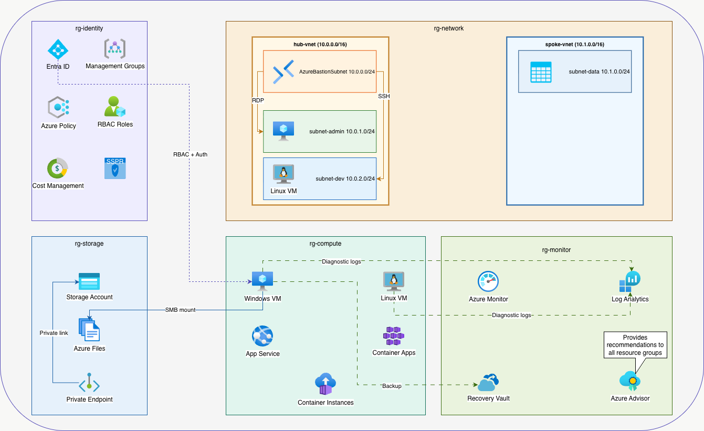

CloudCanvas maps every AZ-104 exam topic to a single connected Azure environment — built for learners and hiring managers who want to see real cloud knowledge in action.
A hub-spoke Azure topology spanning 5 resource groups — each covering a core AZ-104 domain. Built with real IP ranges, real services, and real configuration.

Every Azure service mapped to its AZ-104 topic, real-world use, and exam tip. Search by name or filter by domain.
This lab is actively being built. Sections are added as each domain is completed in Azure.